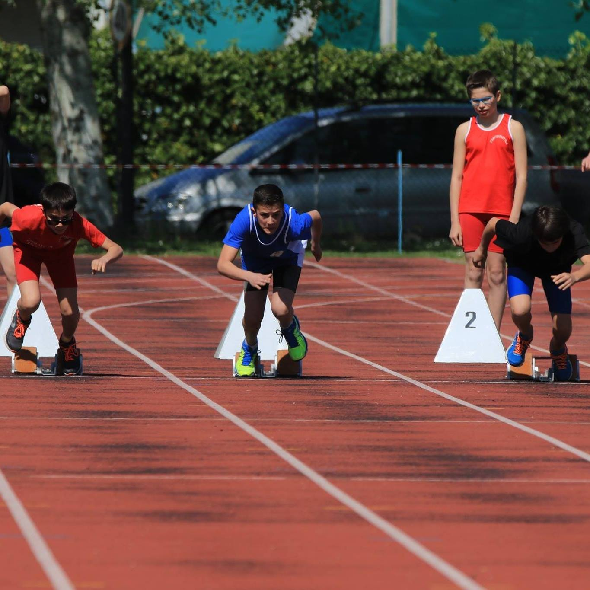

Danny Karol Kasparian – La carriera di una promessa dell'atletica veneta
Scritto da Guido Bresolin
Danny Karol Kasparian, nato nel 2005 e originario di Fossalta di Piave, è considerato una delle giovani promesse dell’atletica leggera veneta. Dopo un primo percorso sportivo nella pallacanestro con il Basket Club Oderzo, ha trovato la sua vera vocazione sulle piste d’atletica, dove ha iniziato a distinguersi fin da giovanissimo.
Specialità e caratteristiche
- 60 metri piani
- 80 metri piani
- Salto in lungo
Conosciuto per la sua progressione nella corsa, la tecnica pulita ispirata dal grande Carl Lewis, e l’equilibrio tra forza ed esplosività, Danny è un atleta in continua crescita.
Risultati principali
- 1° posto nei 60 metri piani ai Campionati Provinciali di Treviso
- Campione provinciale nella staffetta svedese con la Nuova Atletica Roncade
- 3° posto ai Campionati Regionali di Marostica (classe 2005)
- Tra i primi 20 in Italia (includendo atleti nati nel 2004)
Dalla pallacanestro all’atletica
Il percorso sportivo di Danny inizia sui parquet del basket, ma è sulla pista che trova il suo ambiente naturale. La transizione tra i due sport gli ha permesso di sviluppare una mentalità competitiva, un grande controllo del corpo e una visione chiara degli obiettivi.
Galleria fotografica
Contatti e aggiornamenti
Per aggiornamenti sulla carriera di Danny Karol Kasparian o richieste seguiteci.
“Continuerò a dare il meglio di me sperando un giorno che tutto lo sforzo ripaghi quello dato dai miei genitori.”
Danny Karol Kasparian - | Fossalta di Piave